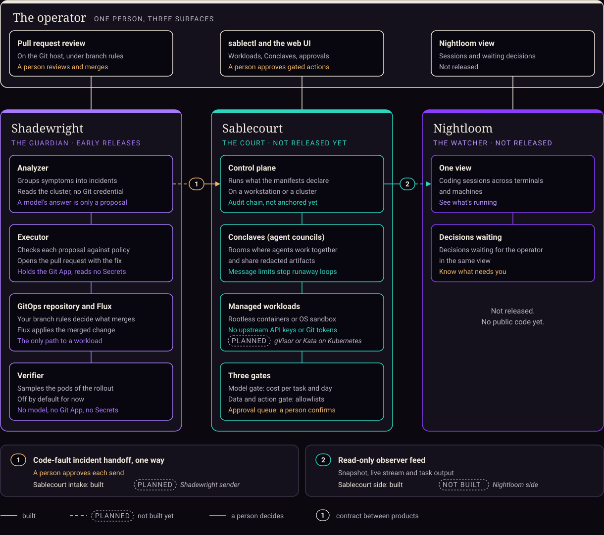

Crafted in Shadow. Engineered with Purpose.
Shadewright Labs
An independent software engineering and research house. Shadewright brings Kubernetes fixes to review. Sablecourt coordinates agents under shared rules. Nightloom keeps work in view.
The source of Shadewright and Sablecourt is public on GitHub. Nightloom is not public yet.
Products
-
Early releases
Shadewright
Find the fault. Put the fix up for review.
A Kubernetes operator for clusters run with GitOps. It finds the fault and puts the fix up for review as a pull request.
- Watches events and object status in the namespaces you choose and groups them into incidents.
- Proposes a typed change from a closed catalog of actions, checked by deterministic policy.
- Opens a pull request in your GitOps repository with the evidence and a rollback plan. Your branch rules decide what merges.
- Never changes your workloads itself: it writes only its own control state.
-
Pre-release, not released yet
Sablecourt
Many agents. One set of rules.
Runs many coding agents, sandboxes and deterministic controllers under one set of rules, declared in manifests.
- A model gate in front of the model providers, with cost accounting per task and per day. Deterministic controllers cannot call a model at all.
- A data and action gate: allowlisted tools, typed GitOps actions and a policy that says allow, approve or deny.
- Approvals pinned to the SHA-256 digest of the payload, confirmed in a native macOS dialog.
- Shared budgets and an audit log.
- Documentation (published with the first release)
- Source on GitHub
-
Not released
Nightloom
See what's running. Know what needs you.
One view of the coding sessions running across terminals and machines, and of the decisions waiting for the operator.
Nightloom is not public yet. There is no repository or download to link to.
How the products fit together

The diagram in words
- Shadewright works alone today. Cluster events go in; a GitOps pull request comes out for the operator to review; after the merge it verifies the rollout.
- Sablecourt works alone today. Manifests go in; agents, sandboxes and controllers run behind the model gate, the data and action gate and the approval queue, where the operator approves gated actions.
- Nightloom (not released) watches the coding sessions on terminals and machines and shows the operator one view of them and of the decisions waiting.
- Code-fault incident handoff, Shadewright to Sablecourt: an incident that needs an application code change, approved by a person, opens a council of agents in Sablecourt. Sablecourt's intake is built; Shadewright's sender is planned.
- Read-only observer feed, Sablecourt to Nightloom: a snapshot, a live stream and task output. Sablecourt's side is built; Nightloom's side is not.
Six shared security laws
The products share one set of security rules. They are the rules each product is built to; a product's own security page says where it stands today and what is still open.
-
Model output is never authorization.
A model or an agent can only propose. Deterministic code or a person decides what runs.
-
Evidence over inference.
A status rests on timestamped observations of the system and says when they were made.
-
Zero raw credentials in untrusted contexts.
A credential stays with the component it was issued to; model-directed work gets a short-lived lease scoped to one task.
-
Bounded redaction at every disclosure boundary.
Outside text is redacted for known secret forms, in bounded time, before it reaches a model, storage, logs or a person.
-
Out-of-band confirmation for high-impact actions.
A browser click is not proof of intent, so a person confirms on a channel that a local program cannot drive.
-
Tamper-evident audit and separated authority.
Every decision leaves an audit record the executor cannot rewrite undetected, and no identity approves its own work.